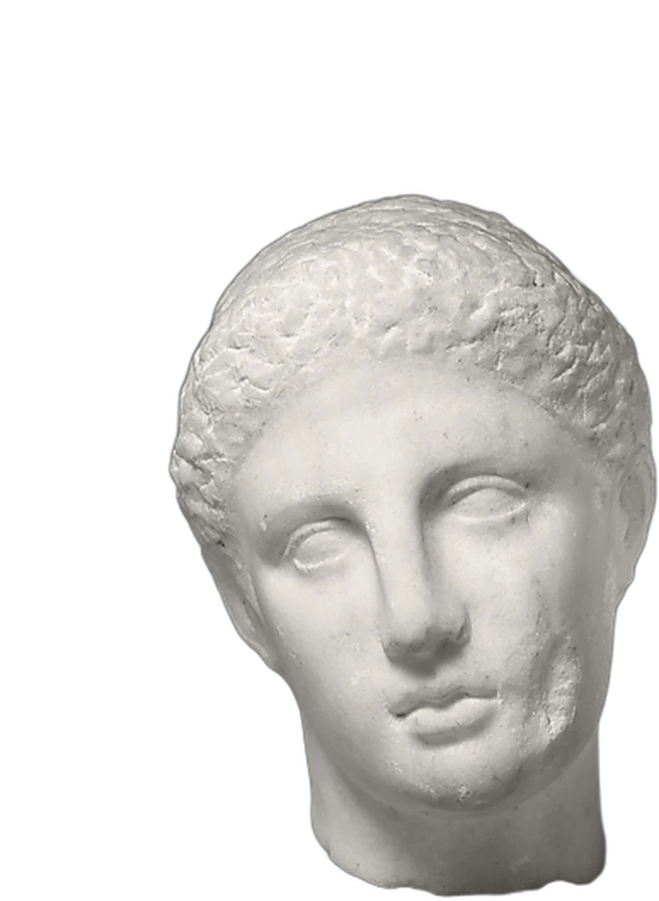
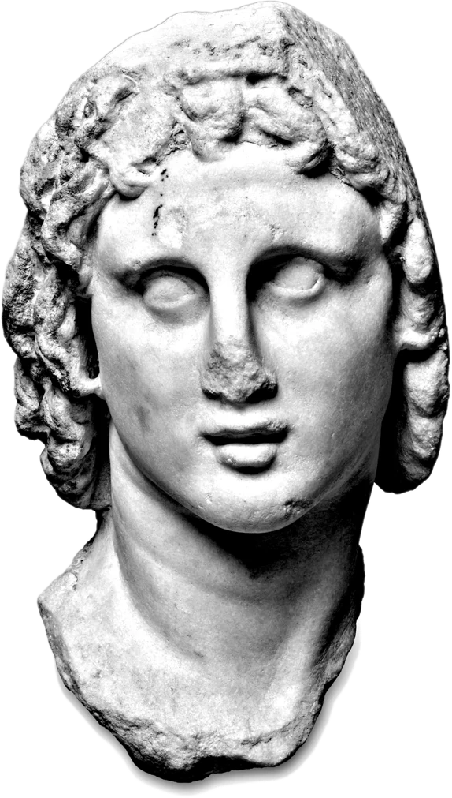
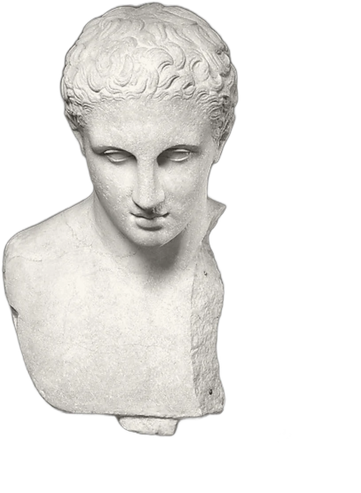
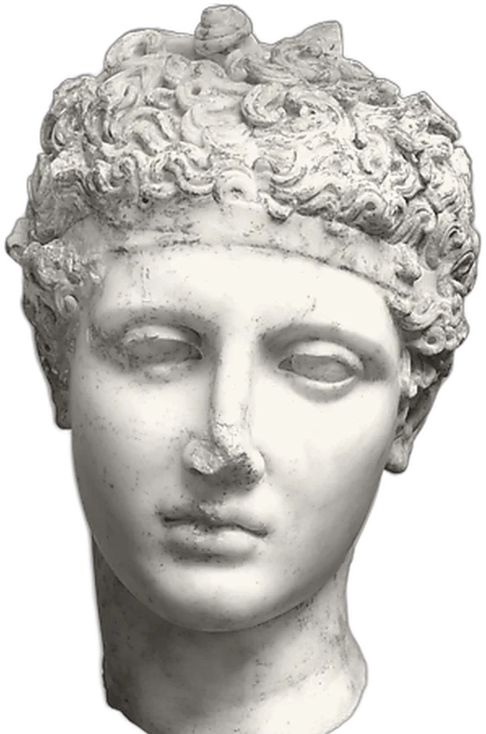

01
Call her.
Live · The maître d’, no table
“You’re not on the list, and we’re full until eleven. What would you like me to do?”


Poise is the coach inside Kleos. Pick a moment, a first date, a pay rise, getting four people into a full restaurant, and she plays the other side out loud. Then she tells you what a stranger would have taken from it.
“You’re not on the list, and we’re full until eleven. What would you like me to do?”
You held the ask. You gave it away on the apology.
Drop the sorry. Give him a reason to say yes.


I won’t flatter you. If you hedge, I’ll hear it. If you apologise for asking, I’ll tell you the moment it cost you. I’ll also tell you when it worked, because that’s the part you’ll want to repeat.
Most of what people take from you happens in the first half-minute, before the point. That part can be trained. It takes a few minutes a day.
Judge your face, your accent or your voice. Keep your video. Pretend to be a doctor.
Poise